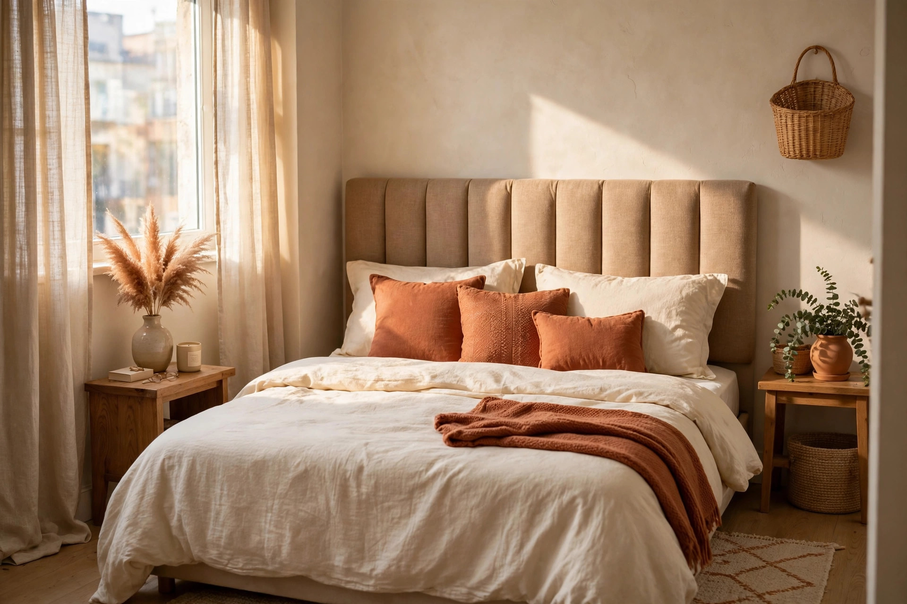

Small Bedroom
Small Bedroom Headboard Ideas on a Budget
Intro
A headboard changes a bedroom more than almost anything else, and it does it without taking up any floor space. A bare wall behind the bed looks unfinished, while a headboard gives the bed a frame, adds colour and texture, and makes the whole room feel put together. The good news is that a headboard does not need to cost much — most of these ideas cost $10–$40, and several cost nothing at all.
This guide has 12 headboard ideas for small bedrooms. Each one lists what it costs and what it suits, and all of them are renter-friendly — no drilling into the wall, no permanent change, and nothing heavy to move out later.

1. A padded fabric headboard, made from a foam mat — $20–$35
Buy a cheap foam camping mat or a piece of upholstery foam, wrap it in a fabric you like, and lean it behind the bed. A plain cotton or linen fabric in a warm neutral works best, and the padding stops the wall feeling hard when you sit up to read. Fix the fabric at the back with a staple gun or strong tape, and the headboard stands on its own behind the mattress.
2. A painted arch on the wall — $8–$15
Paint a wide arch shape on the wall behind the bed, in a colour one or two shades darker than the rest of the room. One small tin of paint is enough, and a piece of string tied to a pencil makes a perfect curve. The arch reads as a headboard from across the room, and because it is only paint, it costs almost nothing and comes off with one coat of white when you move out.
3. A wooden pallet, cleaned and sanded — $0–$15
A free pallet from a shop or warehouse, sanded smooth and given one coat of clear varnish, makes a rustic headboard. Stand it upright behind the bed and lean it against the wall — no fixing needed, its own weight holds it. The slats are useful too: hang a small clip-on lamp or a photo from them. Sand it well, or splinters will catch the bedding.
4. Peel-and-stick wall panels — $15–$30
Self-adhesive foam or felt panels, sold in squares, stick straight to the wall and peel off without damage. Arrange them in a rectangle wider than the bed, in one colour or two alternating shades. They add softness and a little sound insulation, which helps in a thin-walled flat. Press each panel firmly and leave it for a day before leaning anything against it.
5. A woven rattan screen — $25–$40
A small rattan or cane screen, folded flat behind the bed, gives a warm, natural look and costs far less than a shop-bought rattan headboard. Look in second-hand shops — screens are often sold cheap because people do not know what to do with them. Wipe it down, and it will last for years. It suits rooms with plants and light wood furniture.
6. A bookshelf as a headboard — $20–$35
A low, wide bookshelf turned on its side behind the bed becomes a headboard with storage. The top shelf holds a book, a phone and a glass of water, so it replaces a nightstand on one side. Choose a shelf no higher than the mattress plus 40 cm, or it will dominate the room. Anchor it with adhesive pads so it cannot tip forward.
7. A macramé wall hanging — $15–$30
A large macramé hanging in cream cotton adds texture without any hard edges, and it weighs almost nothing. Hang it from one adhesive hook rated for 2 kg, centred above the bed. It suits soft, calm bedrooms and works well with linen bedding. Keep it above pillow height so it does not brush your head at night.
8. An upholstered panel from an old door — $0–$20
Take an old interior door, a wardrobe door, or a large piece of plywood, cover it with a layer of wadding and a fabric, and lean it behind the bed. The flat panel looks like a proper upholstered headboard, and the whole job takes an afternoon. Ask at a salvage yard or a renovation site — doors are often given away free.
9. Framed art as a headboard — $10–$25
One large framed print or three small frames in a row, hung at headboard height, do the same job as a headboard: they give the bed a focal point. Use adhesive picture strips so there are no holes in the wall. Choose art with one colour that matches the bedding, and keep the frames light — heavy frames need proper fixings.
10. A curtain behind the bed — $12–$20
Hang a curtain rod above the bed and a single curtain panel behind it, floor to ceiling, in a soft fabric. The curtain acts as a headboard and softens the whole wall, and it hides any marks or cracks behind it. It also works in a rented room where painting is not allowed. Choose a fabric that matches the window curtains so the room looks planned, not patched.
11. A reclaimed wooden door, standing upright — $0–$15
A solid wooden door, stripped or painted in one colour, leans behind the bed and looks like a panelled headboard. It is heavy, so it will not move, and the panels add character that a flat board cannot. Sand the edges, and paint it the same colour as the wall for a quiet look, or a deep green or navy for a bold one.
12. A backlit panel with LED strip lights — $15–$25
A plain plywood panel behind the bed with a warm LED strip stuck to its back edge glows softly at night and doubles as a reading light. The strip costs about $8 and plugs into a normal socket. It is the cheapest way to get a designer look, and the warm light makes the room feel calm before sleep. Keep the light warm white, not cool white.
Conclusion
A headboard is one of the cheapest ways to finish a small bedroom, because it works on the wall — the one surface that costs nothing to use. Paint, fabric, a pallet or a curtain can all do the job for under $40, and none of them needs drilling or a big spend. Pick the idea that matches your bedding, try it for a week, and the bed will look like it belongs in a finished room.
Budget recap
Painted arch (paint + brush): ~$12
Peel-and-stick panels: ~$20
Macramé hanging: ~$20
LED strip for a backlit panel: ~$8
**Total for a finished headboard look: ~$60 — or ~$12 if you choose paint alone.**
Pinterest pin titles
Pinterest pin titles (3 fresh pins, same article, different designs)
- "Small Bedroom Headboard Ideas on a Budget — 12 Looks Under $40"
- "No Headboard? 12 Budget Ideas That Make Your Bed Look Finished"
- "12 Small Bedroom Headboards Under $40 — No Drilling Needed"